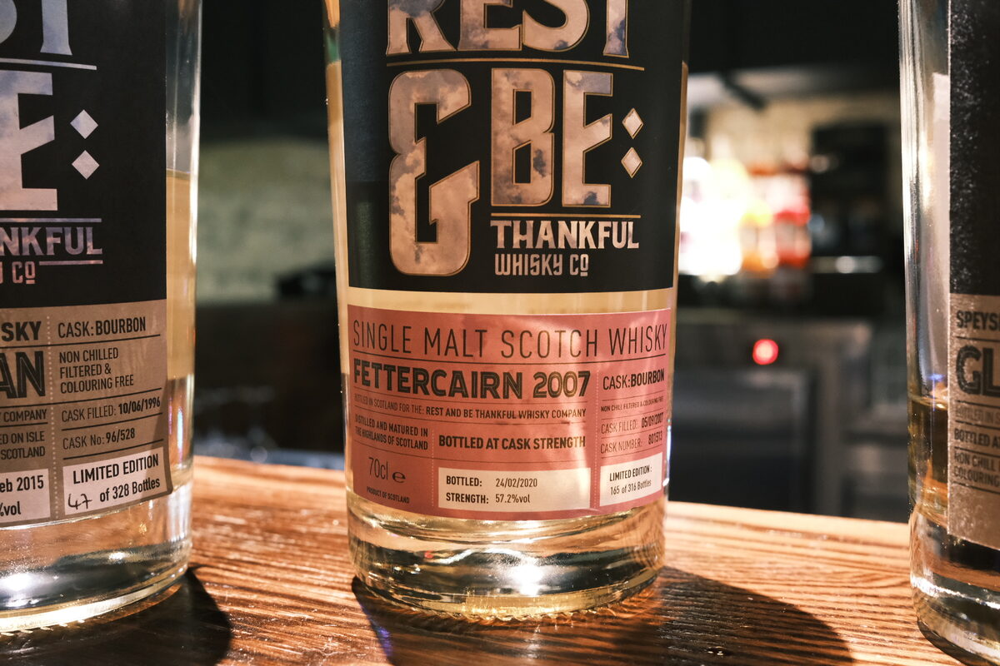

Fettercairn 2007 Rest & Be Thankful 12 years 57.2% (bourbon)
More World Whisky Day! Fettercairn. Not a great OB rep…
Colour Straw.
Nose Toffee and caramel, quite sweet. At the same time, herbal. Coriander and mint. A white wine acidity, and perhaps lemons. Clean malt. Glossy paper magazines. Overripe fruit and a whack of tart apples and pears. Bit of cream at the end, with almonds and walnuts. Fresh.
Palate Sweet and spicy. Cayenne and cinnamon. Caramel and toffee. Toffee apples. Malty – very clean spirit. Dried fruits: sultanas and raisins. Odd, given the cask. Quite moreish. Brown sugar and lollipops.
Finish Menthol and a little herbal, grassy. Light caramel sweetness. Chocolate and cacao nibs. A bit of rockmelon and salt. Textured milk. Long.
Comments Interesting – conventional body but some great explorations outside of the template. Fresh and rich. Lovely. 87/100.

Posted by Dominic on 15 May 2021